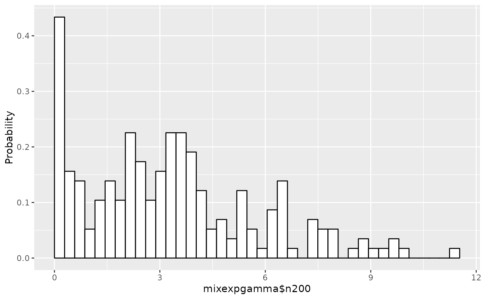

Plot a histogram and estimated densities/distributions of Exponential-based model object
Source:R/expmodel.r
plot.expmodel.RdPlot the histogram and, if available, estimated densities
or cumulative distributions of expmodel object.
Usage
# S3 method for expmodel
plot(
x,
cum = FALSE,
nmax = 4,
graphs = NULL,
bins = 40,
hist = TRUE,
linesize = 1,
...
)Arguments
- x
expmodelobject.- cum
A logical scalar, whether or not it plots cumulative histogram/distributions instead of plain histogram/densities. Default value is
FALSE.- nmax
A maximum number of estimates to be plotted in the graph. The default value is 4.
- graphs
A vector of indices to be displayed in the graph. These indices appear in the leftmost column of the table in
summary.expmodel. The default value isNULL, and if it is notNULL, only the estimated densities designated bygraphsoption appear, andnmaxis ignored.- bins
A number of bins of the histogram.
- hist
A logical scalar. If
TRUE, display a histogram, otherwise not. The default value isTRUE.- linesize
A positive numeric scalar, which indicates the thickness of lines. The default value is
1.- ...
Arguments to be passed to or from other methods.
Examples
## Create `expmodel` object from a data set mixexpgamma$n200
emodel <- expmodel(mixexpgamma$n200)
## Plot it (histogram only)
plot(emodel)
#> Warning: The dot-dot notation (`..density..`) was deprecated in ggplot2 3.4.0.
#> ℹ Please use `after_stat(density)` instead.
#> ℹ The deprecated feature was likely used in the dsdp package.
#> Please report the issue at <https://github.com/tsuchiya-lab/dsdp/issues>.
